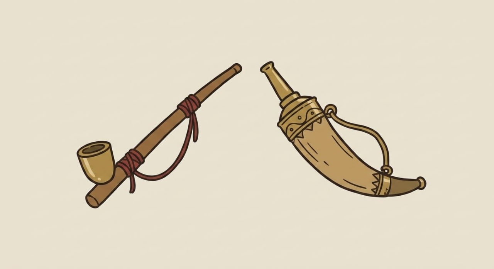

Постання Гетьманщини
Державний устрій, створений у час війни
У ході козацької революції сформувалася Гетьманщина — козацька держава з власним військом, адміністрацією, фінансами та дипломатичними зв’язками. Її інституції спиралися на козацький полково-сотенний устрій і продовжували розвиватися після смерті Хмельницького.
Територія, повноваження гетьмана та ступінь автономії змінювалися залежно від воєн і договорів. Переяславські домовленості 1654 року стали одним із поворотних моментів, але не припинили боротьби за політичну самостійність.

Голос козацького війська
Пам’ять про добу
Литаври супроводжували військові й урочисті події. Такі предмети нагадують, що історія складається не лише з угод і битв, а й із повсякденного життя спільноти.
Як оцінювати спадщину
Хмельницького пам’ятають як провідника руху, що зруйнував старий порядок і започаткував козацьку державність. Водночас його рішення були відповідями на кризу та мали наслідки, які не завжди відповідали намірам учасників. Тому сучасні історики розглядають його і як полководця, і як політика, що діяв у складному міжнародному середовищі.
Суботів і Чигирин — місця, тісно пов’язані з його життям та гетьмануванням. Іллінська церква в Суботові зберігає пам’ять про родинний маєток і політичний центр гетьмана.
Для подальшого читання
- Енциклопедія історії України — Інститут історії України НАН України
- Український інститут національної пам’яті